स्कन्ध 3 · अध्याय 7
श्लोक १
ऋषिरुवाच–
इति तासां स्वशक्तीनामसतीनां समेत्य सः ।
प््रासुप्तलोकतन्त्राणां निशम्य गिरमीश्वरः।। १ ।।
इति तासां स्वशक्तीनामसतीनां समेत्य सः ।
प््रासुप्तलोकतन्त्राणां निशम्य गिरमीश्वरः।। १ ।।
भागवततात्पर्यनिर्णय
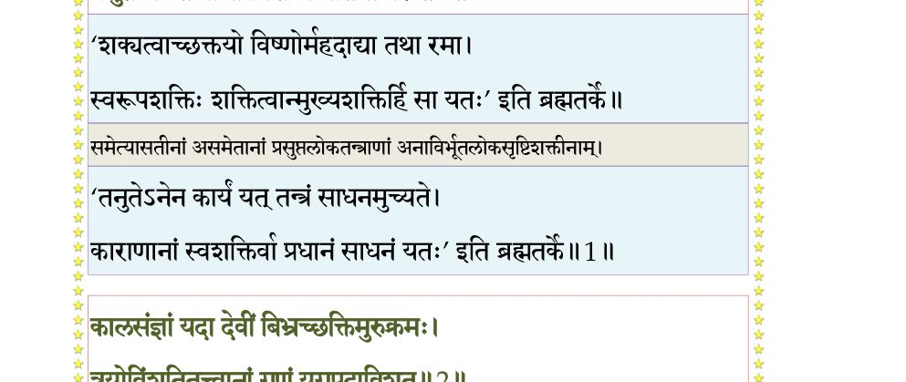
श्लोक २
कालसंज्ञां तदा देवीं बिभ्रच्छक्तिमुरुक्रमः ।
त्रयोविंशतितत्त्वानां गणं युगपदाविशत्।। २ ।।
त्रयोविंशतितत्त्वानां गणं युगपदाविशत्।। २ ।।
भागवततात्पर्यनिर्णय
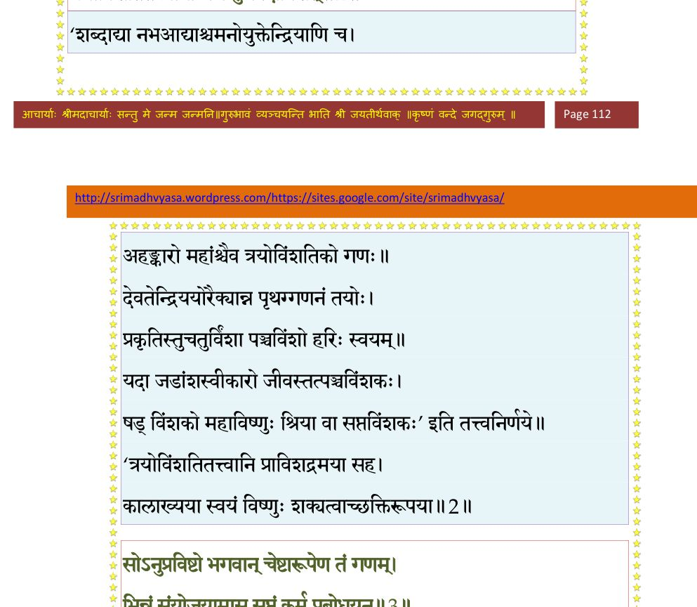
श्लोक ३
सोऽनुप््राविष्टो भगवान् चेष्टारूपेण तं गणम् ।
भिन्नं संयोजयामास सुप्तं कर्म प््राबोधयन्।। ३ ।।
भिन्नं संयोजयामास सुप्तं कर्म प््राबोधयन्।। ३ ।।
भागवततात्पर्यनिर्णय
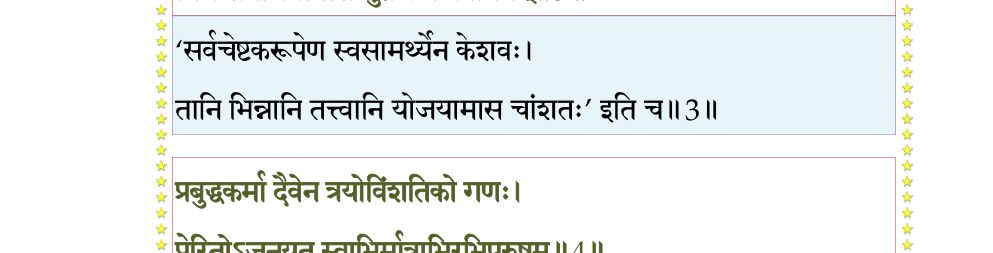
श्लोक ४
प््राबुद्धकर्मा दैवेन त्रयोविंशतिको गणः ।
प््रोरितोऽजनयत् स्वाभिर्मात्राभिरधि(भि) पूरुषम्।। ४ ।।
प््रोरितोऽजनयत् स्वाभिर्मात्राभिरधि(भि) पूरुषम्।। ४ ।।
भागवततात्पर्यनिर्णय
श्लोक ५
परेण विशता स्वस्मिन् मात्रया विश्वसृग् गणः ।
चुक्षोभान्योन्यमासाद्य यस्मिन् लोकाश्चराचराः।। ५ ।।
चुक्षोभान्योन्यमासाद्य यस्मिन् लोकाश्चराचराः।। ५ ।।
श्लोक ६
हिरण्मयः स पुरुषः सहस्रपरिवत्सरान् ।
आण्डकोश उवासाप्सु सर्वसत्त्वोपबृंहितः।। ६ ।।
आण्डकोश उवासाप्सु सर्वसत्त्वोपबृंहितः।। ६ ।।
श्लोक ७
स वै विश्वसृजां गर्भो दैवकर्मात्मशक्तिमान् ।
विबभाजात्मनाऽत्मानमेकधा दशधा त्रिधा।। ७ ।।
विबभाजात्मनाऽत्मानमेकधा दशधा त्रिधा।। ७ ।।
भागवततात्पर्यनिर्णय
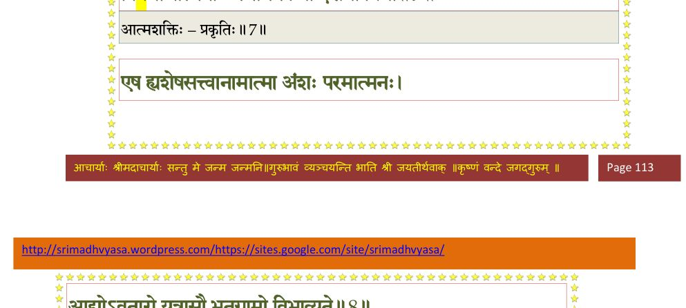
श्लोक ८
एष ह्यशेषसत्त्वानामात्मांशः परमात्मनः ।
आद्योऽवतारो यत्रासौ भूतग्रामो विभाव्यते।। ८ ।।
आद्योऽवतारो यत्रासौ भूतग्रामो विभाव्यते।। ८ ।।
भागवततात्पर्यनिर्णय
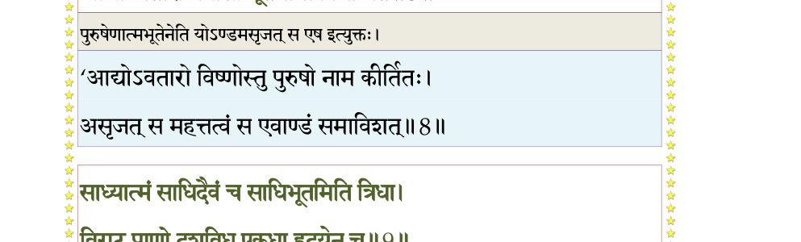
श्लोक ९
साध्यात्मं साधिदैवं च साधिभूतमिति त्रिधा ।
विराट्प््र•णो दशविध एकधा हृदयेन च।। ९ ।।
विराट्प््र•णो दशविध एकधा हृदयेन च।। ९ ।।
भागवततात्पर्यनिर्णय
श्लोक १०
स्मरन् विश्वसृजामीशो विज्ञापितमधोक्षजः ।
विराजमतपत् स्वेन तेजसैषां विवृद्धये।। १० ।।
विराजमतपत् स्वेन तेजसैषां विवृद्धये।। १० ।।
श्लोक ११
अथ तस्याभितप्तस्य कतिचायतनानि ह ।
निरभिद्यन्त देवानां तानि मे गदतः शृृणु।। ११ ।।
निरभिद्यन्त देवानां तानि मे गदतः शृृणु।। ११ ।।
श्लोक १२
तस्याग्निरास्यं निर्भिण्णं लोकपालोऽविशत् पदम् ।
वाचा स्वांशेन वक्तव्यं ययासौ प््रातिपद्यते।। १२ ।।
वाचा स्वांशेन वक्तव्यं ययासौ प््रातिपद्यते।। १२ ।।
श्लोक १३
निर्भिण्णं तालु वरुणो लोकपालोऽविशद्धरेः ।
जिह्वयांशेन च रसान् ययाऽसौ प््रातिपद्यते।। १३ ।।
जिह्वयांशेन च रसान् ययाऽसौ प््रातिपद्यते।। १३ ।।
श्लोक १४
निर्भिण्णे अश्विनौ नासे विष्णोराविशतां पदम् ।
घ्राणेनांशेन गन्धस्य प््रातिपत्तिर्यतो भवेत्।। १४ ।।
घ्राणेनांशेन गन्धस्य प््रातिपत्तिर्यतो भवेत्।। १४ ।।
श्लोक १५
निर्भिण्णे अक्षिणी त्वष्टा लोकपालोऽविशत् प््राभोः ।
चक्षुषांशेन रूपाणां प््रातिपत्तिर्यतो भवेत्।। १५ ।।
चक्षुषांशेन रूपाणां प््रातिपत्तिर्यतो भवेत्।। १५ ।।
श्लोक १६
निर्भिण्णान्यथ चर्माणि लोकपालोऽनिलोऽविशत् ।
प््र•णोनांशेन संस्पर्शं येनासौ प््रातिपद्यते।। १६ ।।
प््र•णोनांशेन संस्पर्शं येनासौ प््रातिपद्यते।। १६ ।।
भागवततात्पर्यनिर्णय
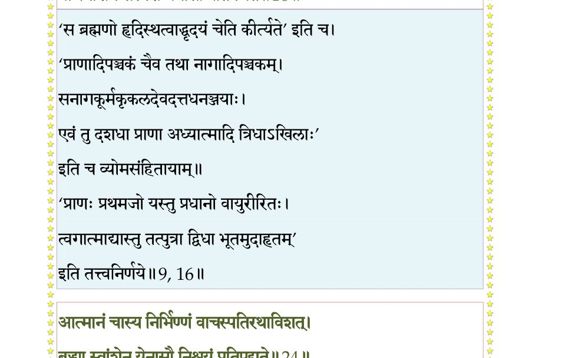
श्लोक १७
कर्णावस्य विनिर्भिण्णौ धिष्ण्यं स्वं विविशुर्दिशः ।
श्रोत्रेणांशेन शब्दस्य सिद्धिं येन प््रापद्यते।। १७ ।।
श्रोत्रेणांशेन शब्दस्य सिद्धिं येन प््रापद्यते।। १७ ।।
श्लोक १८
त्वचमस्य विनिर्भिण्णां विविशुर्धिष्ण्यमोषधीः ।
अंशेन रोमभिः कण्डूं यैरसौ प््रातिपद्यते।। १८ ।।
अंशेन रोमभिः कण्डूं यैरसौ प््रातिपद्यते।। १८ ।।
श्लोक १९
मेढ्रं तस्य विनिर्भिण्णं स्वधिष्ण्यं क उपाविशत् ।
रेतसांऽशेन येनासावानन्दं प््रातिपद्यते।। १९ ।।
रेतसांऽशेन येनासावानन्दं प््रातिपद्यते।। १९ ।।
श्लोक २०
गुदं पुंसो विनिर्भिण्णं मित्रो लोकेश आविशत् ।
पायुनांऽशेन येनासौ विसर्गं प््रातिपद्यते।। २० ।।
पायुनांऽशेन येनासौ विसर्गं प््रातिपद्यते।। २० ।।
श्लोक २१
हस्तावस्य विनिर्भिण्णाविन्द्रः स्वर्पतिराविशत् ।
वार्तयांऽशेन पुरुषो यया वृत्तिं प््रापद्यते।। २१ ।।
वार्तयांऽशेन पुरुषो यया वृत्तिं प््रापद्यते।। २१ ।।
श्लोक २२
पादावस्य विनिर्भिण्णौ लोकेशो विष्णुराविशत् ।
गत्या स्वांशेन पुरुषो यया प््र•प्यं प््रापद्यते।। २२ ।।
गत्या स्वांशेन पुरुषो यया प््र•प्यं प््रापद्यते।। २२ ।।
श्लोक २३
हृदयं चास्य निर्भिण्णं चन्द्रमा धिष्ण्यमाविशत् ।
मनसांऽशेन येनासौ विक्रियां प््रातिपद्यते।। २३ ।।
मनसांऽशेन येनासौ विक्रियां प््रातिपद्यते।। २३ ।।
श्लोक २४
आत्मानं चास्य निर्भिण्णं वाचस्पतिरुपाविशत् ।
बुद्ध्या स्वांशेन येनासौ निश्चयं प््रातिपद्यते।। २४ ।।
बुद्ध्या स्वांशेन येनासौ निश्चयं प््रातिपद्यते।। २४ ।।
भागवततात्पर्यनिर्णय
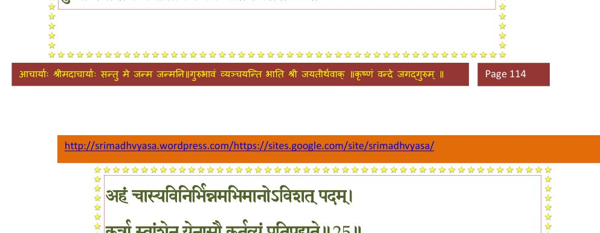
श्लोक २५
अहं चास्य विनिर्भिण्णमभिमानोऽविशत् पदम् ।
कर्त्रा स्वांशेन येनासौ कर्तव्य प््रातिपद्यते।। २५ ।।
कर्त्रा स्वांशेन येनासौ कर्तव्य प््रातिपद्यते।। २५ ।।
भागवततात्पर्यनिर्णय
श्लोक २६
सत्त्वं चास्य विनिर्भिण्णं महान् धिष्ण्यमुपाविशत् ।
चित्तेनांशेन येनासौ विज्ञानं प््रातिपद्यते।। २६ ।।
चित्तेनांशेन येनासौ विज्ञानं प््रातिपद्यते।। २६ ।।
भागवततात्पर्यनिर्णय
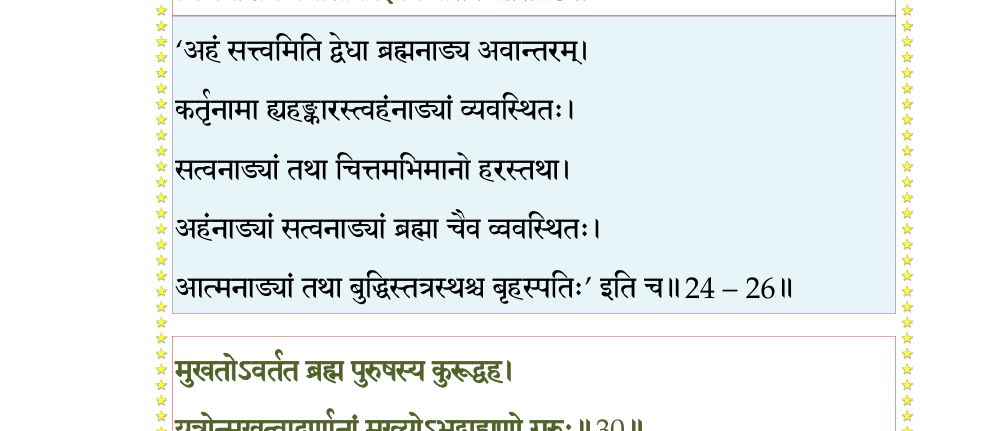
श्लोक २७
शीर्ष्णोऽस्य द्यौर्धरा पद्भ्यां खं नाभेरुदपद्यत ।
गुणानां वृत्तयो येषु प््रातीयन्ते सुरादयः।। २७ ।।
गुणानां वृत्तयो येषु प््रातीयन्ते सुरादयः।। २७ ।।
श्लोक २८
औत्पत्तिकेन सत्त्वेन दिवं देवाः प््रापेदिरे ।
धरां रजःस्वभावेन पणयो ये च ताननु।। २८ ।।
धरां रजःस्वभावेन पणयो ये च ताननु।। २८ ।।
श्लोक २९
तार्तीयेन स्वभावेन भगवन्नाभिमाश्रिताः ।
उभयोरन्तरं व्योम ये रुद्रपार्षदा गणाः।। २९ ।।
उभयोरन्तरं व्योम ये रुद्रपार्षदा गणाः।। २९ ।।
श्लोक ३०
मुखतोऽवर्तत ब्रह्म पुरुषस्य कुरूद्वह ।
यत्रोन्मुखत्वाद् वर्णानां मुख्योऽभूद् ब्राह्मणो गुरुः।। ३० ।।
यत्रोन्मुखत्वाद् वर्णानां मुख्योऽभूद् ब्राह्मणो गुरुः।। ३० ।।
भागवततात्पर्यनिर्णय
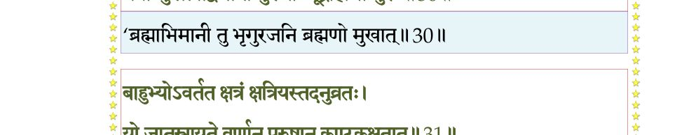
श्लोक ३१
बाहुभ्योऽवर्तत क्षत्रं क्षत्रियस्तदनुव्रतः ।
यो जातस्त्रायते वर्णान् पुरुषान् कण्टकक्षतात्।। ३१ ।।
यो जातस्त्रायते वर्णान् पुरुषान् कण्टकक्षतात्।। ३१ ।।
भागवततात्पर्यनिर्णय
श्लोक ३२
विशोऽवर्तन्त तस्योर्वो र्लोकवृत्तिकरीर्विभोः ।
वैश्यस्तदुद्भवो वार्तां नृणां यः समवर्तयत्।। ३२ ।।
वैश्यस्तदुद्भवो वार्तां नृणां यः समवर्तयत्।। ३२ ।।
भागवततात्पर्यनिर्णय
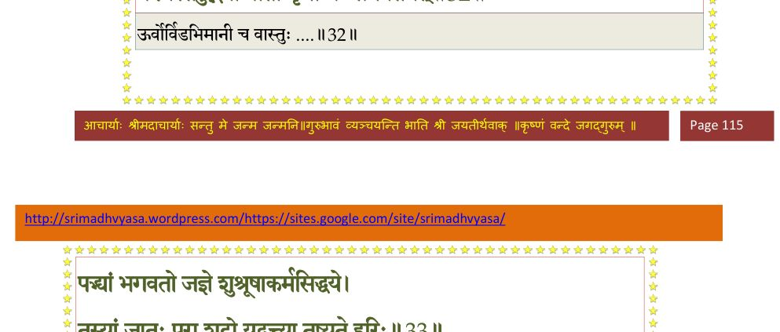
श्लोक ३३
पद्भ्यां भगवतो जज्ञे शुश्रूषाकर्मसिद्धये ।
तस्यां जातः पुरा शूद्रो यद्वृत्त्या तुष्यते हरिः।। ३३ ।।
तस्यां जातः पुरा शूद्रो यद्वृत्त्या तुष्यते हरिः।। ३३ ।।
भागवततात्पर्यनिर्णय
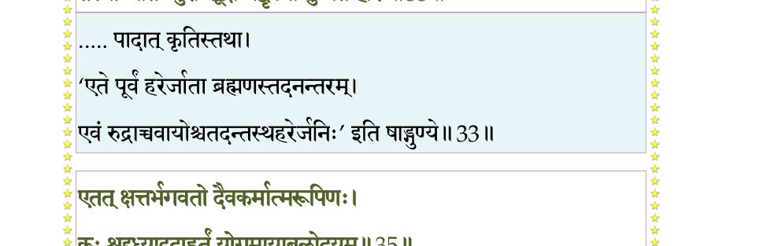
श्लोक ३४
एते वर्णाः स्वधर्मेण यजन्ते स्वगुरुं हरिम् ।
श्रद्धयाऽत्मविशुद्ध्यर्थं यज्जाताः सह वृत्तिभिः।। ३४ ।।
श्रद्धयाऽत्मविशुद्ध्यर्थं यज्जाताः सह वृत्तिभिः।। ३४ ।।
श्लोक ३५
एतत् क्षत्तर्भगवतो दैवकर्मात्मरूपिणः ।
कः श्रद्दध्यादुदाहर्तुं योगमायाबलोदयम्।। ३५ ।।
कः श्रद्दध्यादुदाहर्तुं योगमायाबलोदयम्।। ३५ ।।
भागवततात्पर्यनिर्णय
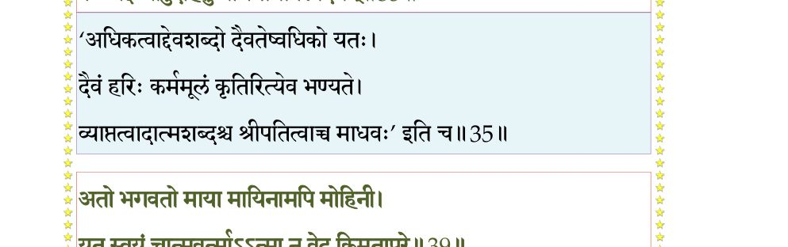
श्लोक ३६
अथापि कीर्तयाम्यङ्ग यथामति यथाश्रुतम् ।
कीर्तिं हरेः स्वां संस्कर्तुं गिरमन्याभिधां सतीम्।। ३६ ।।
कीर्तिं हरेः स्वां संस्कर्तुं गिरमन्याभिधां सतीम्।। ३६ ।।
श्लोक ३७
एकान्तलाभं वचसो नु पुंसः सुश्लोकमौलेर्गुणवादमाहुः ।
श्रुतेश्च विद्वद्भिरुपाकृतायाः कथासुधाया उत संप््रायोगम्।। ३७ ।।
श्रुतेश्च विद्वद्भिरुपाकृतायाः कथासुधाया उत संप््रायोगम्।। ३७ ।।
श्लोक ३८
आत्मनोऽवसितो वत्स महिमा कविनादिना ।
संवत्सरसहस्रान्ते धिया योगविपक्वया।। ३८ ।।
संवत्सरसहस्रान्ते धिया योगविपक्वया।। ३८ ।।
श्लोक ३९
अतो भगवतो मायां मायिनामपि मोहिनीम् ।
यत् स्वयं चात्मवर्त्मात्मा न वेद किमुतापरे।। ३९ ।।
यत् स्वयं चात्मवर्त्मात्मा न वेद किमुतापरे।। ३९ ।।
भागवततात्पर्यनिर्णय
श्लोक ४०
यतोऽप््र•प्य निवर्तन्ते वाचश्च मनसा सह ।
अहं चान्य इमे देवास्तस्मै भगवते नमः।। ४० ।।
अहं चान्य इमे देवास्तस्मै भगवते नमः।। ४० ।।
भागवततात्पर्यनिर्णय
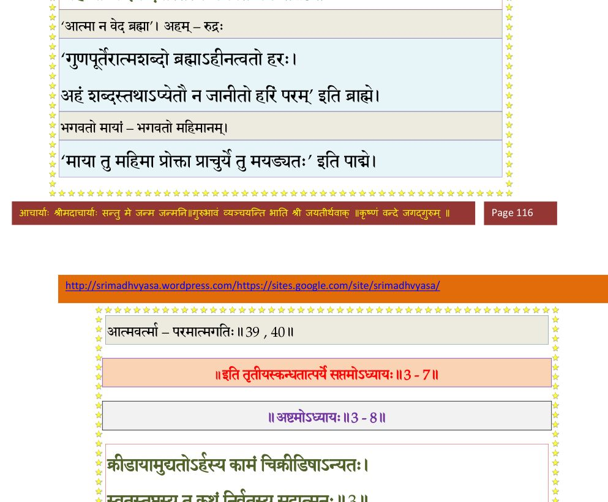
।। इति श्रीमद्भागवते तृतीयस्कन्धे सप्तमोऽध्यायः ।।